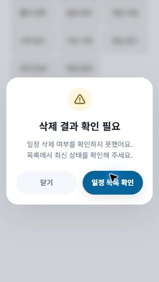
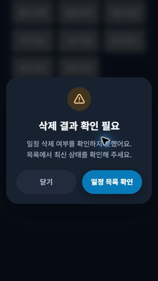
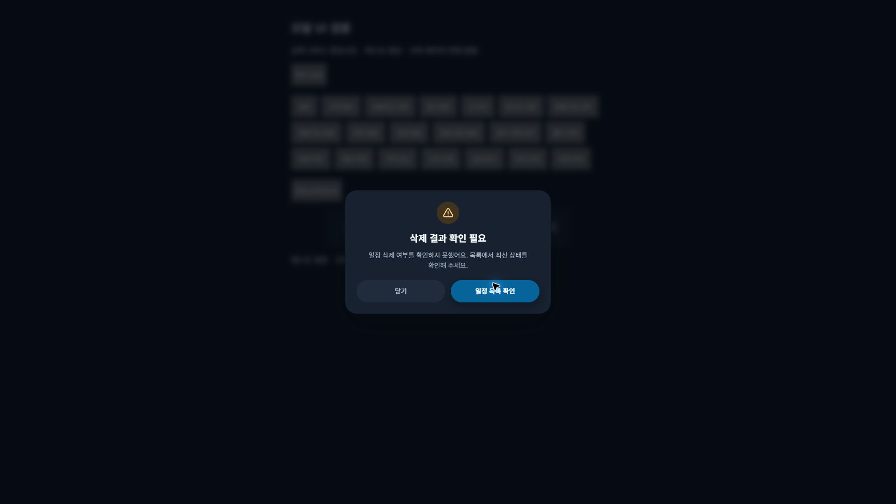

2026-10-14 · 실제 서비스 컴포넌트를 분리된 로컬 미리보기에서 검증했습니다. API는 테스트 응답으로 대체했고 실제 서비스 데이터는 수정하지 않았습니다. 커밋·푸시는 하지 않았습니다.
공통 알림/삭제 확인/네트워크 오류/로그아웃/긴 안내, 일정 삭제 결과 불명, 로그인 오류, 회원가입 오류 및 완료, 문의 접수 및 관리자 답변 완료, 일정 생성 완료, 폴더 이름 입력·선택·생성, 공유 및 링크 복사·PDF 오류 안내, 메모 작성/저장, 시작 장소 선택, 시간 수정, 관심 장소 선택, 위치 권한 안내, 약관 문서 미확인 안내.
브라우저 기본 alert/confirm 호출도 점검했습니다. 브라우저가 제공하는 대화상자는 서비스 CSS 적용 범위 밖이므로 바꾸지 않았고 기존 동작을 유지했습니다.
src/Alert/Alert.jsxsrc/Alert/Alert.csssrc/App.csssrc/Header/Header.jsxsrc/Login/LoginAlert.jsxsrc/components/InputDialog.jsxsrc/index.jssrc/responsive.csssrc/modal.csssrc/utils/useModalFocus.js| 뷰포트 | 일반 삭제 확인 너비 | 라이트/다크 | 결과 |
|---|---|---|---|
| 320px | 294px | 각 테마 20개 상태 | 통과 |
| 375px | 345px | 각 테마 20개 상태 | 통과 |
| 390px | 359px | 각 테마 20개 상태 | 통과 |
| 768px | 440px | 각 테마 20개 상태 | 통과 |
| 1366px | 440px | 각 테마 20개 상태 | 통과 |
| 1920px | 440px | 각 테마 20개 상태 | 통과 |
정확한 CSS 너비의 프레임에서 기존 컴포넌트와 실제 CSS를 렌더링했습니다. 기본 242개 상태 및 320×280의 20개 상태를 검사했습니다. 화면 이탈, 가로 넘침, 버튼 글자 잘림, 초기 포커스 이탈 및 배경 스크롤 잠금 문제를 수정 후 확인하지 못했습니다. 긴 안내는 모달 내부에서 2,970px까지 스크롤했고 배경 scrollTop=26은 유지되었습니다. Tab/Shift+Tab 순환, ESC 닫기, 원래 버튼으로의 포커스 복귀도 확인했습니다.
삭제 취소 시 요청이 발생하지 않고, 반복 클릭 시 요청은 한 번만 발생합니다. 응답 불명 이후 닫기·다시 열기·목록 이동은 DELETE를 반복하지 않고 삭제 성공 안내를 만들지 않습니다. 폴더 생성/선택 저장과 메모 저장은 테스트 응답으로 브라우저에서 확인했습니다. 링크 복사는 성공 안내를 확인했고, PDF 실패는 오류 안내와 사용자가 누르는 재시도 버튼을 표시합니다. 실제 서비스 API의 삭제와 저장, PDF 파일 다운로드를 이 검증에서 수행하지 않았습니다.
자동화: 71개 테스트 스위트 / 517개 테스트 통과. 최종 프로덕션 빌드: Compiled successfully. CSS 검사: git diff --check 통과.
src/Header/scheduleActions.test.jsxsrc/Login/LoginAlert.test.jsxsrc/utils/useModalFocus.test.jsx


원시 측정: measurements.json / short-viewport.json / final-behavior.json